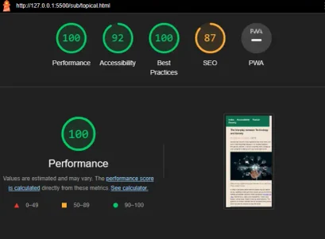
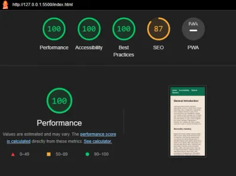
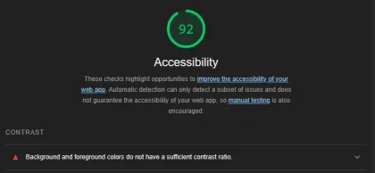
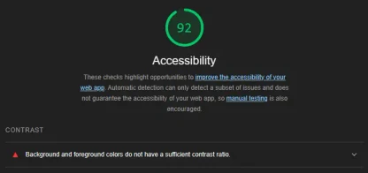
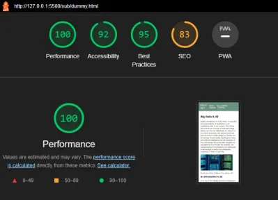

Accessibility audits
Automated test from the different pages of the site showed a near perfect score, possible improvements in the accessibilty section were related to contrast. On the topical page the author text had too little contrast compared to it's background. And on the dummy page the contrast was too low between the header text and it's background color.
We tried to make sure throughout that the page would be responsive no matter the screen size, having mobile first as a practice proved to be quite helpful in achieving a satisfying final page. Using @viewport we managed to make layout changes for smaller screens.
We also tried to take into account the suggestions from lighthouse, changing contrast where necessary to provide the reader with a better viewing experience
Efforts were made to use correct semantic elemts and html tags to ensure proper screen reader compatibility.
Images were downsized to put as litte strain on data usage and performance as possible, compressing quality for better performance. Images were also (except for the ones below, due to poor time management) made to scale responsively with the page and layout.
    